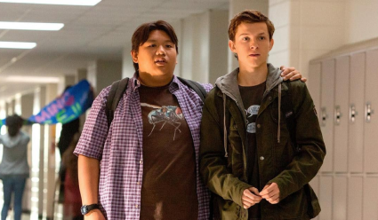
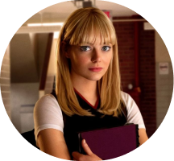
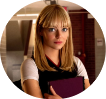

Des valeurs à défendre
Spiderman,un héros qui se dépasse
Peter Parker est un orphelin.Ses parents ont été tués.Peter est élevé par sa tante et son oncle: May et Benjamin Parker. C'est un élève intéressé par les sciences.
Un jour, il assiste à une expérienceetilse fait mordre par une arignée génétiquement modifiée.Il acquiert alors des super-pouvoirs. Ildevient fort,agile,souple,et peut lancer des toiles d'araignée. il utilise cette force pour gagner facilement de l'argent. Un jour, ilvoit quelqu'un voler de l'argent mais ne tente pas de l'arreter. Peu de temps après, son oncle est assassiné.La colère conduit Peter à poursuivre l'assasin découvrant que c'était le voleur qu'il avait laissé s'échapper.
C'est à partir de cetévènement qu'il décida de lutter contre lecrime,serappelant desparolesde son oncle Ben:
"Un grand pouvoir implique de grandesresponsabilités"
Ildevient alors le justicier Spiderman,arpentant les rues deNew York à la recherche de criminels et decitoyens endanger. Pour gagner de l'argent, il vend desphotos de Spiderman à des journalistes. Il est engagé dansleDaily Bugle.Malgré toutes sespéripéties ilreste proche des habitants,fidèle à sesvaleurset à sa vision de la justice.
Des fondations solides
De quoi est-il vraiment capable ?
Force surhumaine :Possedant une force proportionnelle àcelle d'une arignée,Spiderman est capable de soulever plusieurs tonnes ou même soulever des voitures se déplaçant à 40 km/h
Durabilité surhumaine:Spiderman possède des oset des fibres musculaires plus denses lui permattant de survivre à de grands imacts , et est notamment pas affecté par une chute de plusieursétages ou moins affecté par des coups violents.
Vitesse surhumaine : Spiderman peut se déplacer à des vitesses plus qu'ordinaire pour un humain, faisant de lui un expert en esquive
Agilitésurhumaine :Spiderman est exceptionnellement agile et rapide, capable de se balancer partout avec sa toile d'araignée et de sautes de grandes distances sans difficulté.
Réflexes surhumains :Spidermanpossède des réflexes surdéveloppés lui permettant d'attraper des objets se déplaçant à grande vitesse sans même regarder ce qu'il fait.
Equilibre surhumain :Le sens d'equilibre de Spiderman est surhumain,lui conférant un equilibrium, une coordinatiov, une dextérité et une agilité inhumaine pour accomplir des actes acrobatiques incroyables.
Vue surhumaine: La vision de Spiderman est extrêmement développée,si bien qu'il a besoin de lunettes spéciales pour éviter d'être handicapé dans un combat.
Sens d'araignée: Le trait le plus important de Spiderman est son instinct desurvie paranormal , qui l'avertit des instants dangereux à venir avant qu'iln'arrivent.
Le cerveau de Spiderman absorbe et réagit aux évênements de façon accélérée, l'alertant du danger autour de lui,ce qui lui sert desixième sens.Ceci ne fonctionne qu'au niveau de son subconscient, ce qui l'laerte de dangers presques impossible à remarques du prmeier coups, cela luipermet d'esquiver chaque coupset d'esquivet chaque couos et de contrer les attaques dans ses combats.
Grimper aux murs :Spiderman est capable d'adhérer aux murs, aux plafonds et d'autres surfaces comme une araignée, déclarant même qu'il n'a pas besoin de mécannisme pour cela.
Grande intelligence:Peter Parker est une personne exceptionnellement intelligente dans le domaine des science, capable d'inventer et de construire son propre lance-toiles(dont la conception même impressionne Tony Stark)et d'utiliser les lois de la physique à son avantage en plein milieu d'un combt en tant que Spiderman, il peut également inventer des blagues pleines d'esprits, maisennuyantes, pour irriter ses adversaires
Culture générale: Peter Parker possède une très grande culture générale,particulièrement au niveau du cinéma.Cela l'aide notamment dans ses missions, et pour élaborerdesplans
Jamais Seul
Son entourage proche


Des meilleurs amis
Harry Osborn est le meilleur ami dePeter Parker .ils'agira pourtant d'une amitié à double tranchant, Harry voulant venger la mort de son père, le Bouffon Vert en tuant Spiderman. Pour cela il s'en prendraà Mary Jane et s'alliera
au DR Octopus.Lorsque fianlement il découvrira la réelle identité de Spiderman, il sera choqué de découvrir que son pire ennemi est en réalité son meilleur ami.Il finira par s'allier avec Peter afin de sauver MJetmourra dans ses bras.
Ned Leeds est également le meilleur ami dePeter au lycée dans les films Marvel.Lorsqu'il découvre son identité secrète il s'appliquera à l'épauler dans ses opérations de justicier. il aime s'appelr "le garsdans le fauteuil" de Spiderman et le meilleur ami dunuméro 1 dePeter.
Dans lefilm No Way Hom, après avoir interrogé les versiosn alternatives de Peter il apprend que Harry avait essayé de tuer son meilleur ami et varassurer Peter dans une scène plutôt comique.
MJ/Gwen Stacy
MJ et Gwen Stacy,sont le love interest de Peter Parker. Mary jane est la fille populaire du lycée et sortira d'abord avec Harry Osborn mais elle sera le principalamour de Peter et deviendra safemme. Dans les films de Marvel, Michelle Jones est une adolescentecynique et très intelligente. Elle s'ouvrira peu à peu
avec Ned Leeds t Peter et tombera amoureuse de lui. Leur relation sramise à mal par la révéltion de l'identité de Parker aumone netier dnas No Way Home.
Gwen Stacy est également un grand amour dePeter. Jugée moins superficielle que Mary Jane elle partage la passiondes sciences avec Peter et leur relation sera mise à l'épreuve par ses absences répétées.Lorsque son père meurt alorsqu'il découvre l'identité de Spiderman , il demandera à Peter de gardersa fille loin dudanger et donc de lui
ce qui engendrera une grande culpabilité cheznotre héros. Gwen finira par mourir de la mainduBouffonVert(ou d'Electro dans The Amazing Spiderman 2) et Peter retrouvera MJ.
Avec cesrelations Spiderman apprendra à concilier sa vie affective at son activité de justicier masqué ainsiquele sensdu mot sacrifice.

 

Les Avengers
Avec Captain Americ: Civil War, Tony Stark a fait du spiderman un membre honoraire des Avengers.Un statut qui lui a ensuite été octroyé définitivement dans Avnegers: Infinity War et la menace Thanos. Mais durant
ce laps de temps , Peter Parker s'est focalisé sur sa communauté en devenant "la petite ariagnée de quartier". Deux années d'expériences ont permis au jeune homme d'acquérir de la maturité nécessaire pour devenir celui que les Avengers attendaient
Toutefois Spiderman combat des mences principalement sur Terr car c'est sur son terrain de prédilction. Un nouveau groupe risque de voir le jouravec Daredvil, Luke Cage,Jessica Jones et IronFist:Les Defenders. on verra où tout cela nous mène!


Un univers hyper riche
A chacun son spidey !
Le multivers est un concept queDC et Marvel utilisent tousles deux. Chaqueenreprise utilise uneterre ou un univers pricnipal comme hôte de la majorité deleurshistoires, laissant d'autreshistoires à explorer dansdes univers paralelles, des bandes dessinées à un coup ou d'autresconcepts pour enrichir la tradition et garder les choses fraiches.A DC, la erre pricnipale est Earth Prime. marvel , en revanche,aime utiliser des nombres. latere d'origine dans Marvelest la terre 66. Le MCMactuel vient de recvoir le surnon de Earth-616 aprèsavoir été précedemment reconnu comme Earth -199999.Earth 199999 a essentiellemnt été remplacé officiellement par 616 le mois dernier.
Peut importece qui se passe ,le multivers estsur le point des'ouvrir complètement et qu'elle meilleure façon d'en profiter que dans une histoire avec l'un despersonnagesles plus aimés de Marvel.
Il existe forcément un Spidermn qui teplaira dans cet univers aux possibilités infinis